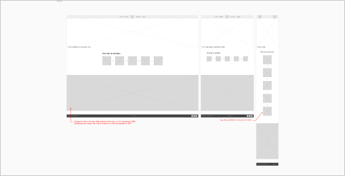
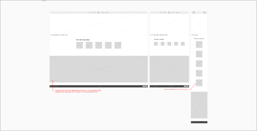

À-propos du projet
Ce site web a été réalisé dans le cadre de mon cours de développement web de première année en Bachelier d’informatique, option Télécoms et Réseaux, à la Haute École en Hainaut.
L’idée du projet remonte à 2022, quand un ami et moi avons eu l’idée de créer un site web d’humour noir sur la Chine. C’est ainsi que j'ai créé, avec son aide, mon tout premier site web.
L’objectif de ce projet est de reprendre l’idée initiale, tout en y ajoutant l'expérience que j'ai acquise depuis, afin de réaliser un beau site pour ce projet de cette année.
Wireframe du projet
La première étape consiste à réaliser le wireframe du projet afin d'avoir une idée globale d'où placer mes éléments lors de la réalisation de la maquette du projet.
 

Chartte graphique
Pour la réalisation de la maquette visuelle du projet, il ne me manque plus qu’un fil directeur à suivre. C’est pour cela que j'ai réalisé une petite charte graphique afin de ne pas dévier de mon idée initiale.
Maquette du site
La maquette a été créée sur Figma du début à la fin, le lien vers celle-ci se trouve juste ici.
Vous pouvez aussi voir le wireframe juste là.
Conclusion
En conclusion, ce projet ma permis de voir les competences aquises depuis mes premieres ligne d’html au moi de present qui ecrit ces lignes.